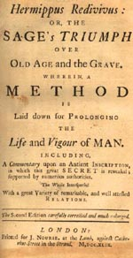
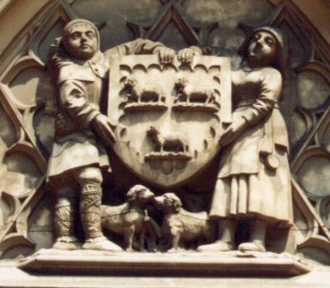
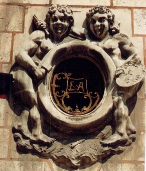
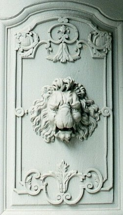

LES
RECREATIONS HERMETIQUES


revu le 31 août 2003

Préambule
Les
Récréations
hermétiques forment un texte sur le grand oeuvre
qui est original à plusieurs titres :
- c'est un traité rédigé au XIXe
siècle, et dont l'auteur est resté anonyme ;
- ce traité a été dans les mains du chimiste Eugène Chevreul qui le
possédait, comme quanttié d'autres, dans sa riche
bibliothèque du Museum
d'Histoire Naturelle ;
- il est probable que Fulcanelli s'est inspiré de plusieurs
passages de ce traité anonyme, passages que nous avons
relevés et qui semblent se situer dans le Mystère des
Cathédrales ;
- le ton est superposable à celui de maints traités :
c'est une synthèse bien ordonnée, mêlant
adroitement des éléments d'alchimie positive et
d'alchimie chimérique ;
-
ce traité est cité plusieurs fois, tant par Fulcanelli
que par Eugène Canseliet, notamment dans son Alchimie
expliquée sur ses Textes classiques et dans ses Deux Logis alchimiques.
A ce titre, il peut être lu avec un certain profit par les disciples d'Hermès.
Merci à Alain Mauranne pour les photographies de Bourges
Les
sciences éprouvent comme les choses les
vicissitudes du temps, et dégénèrent plutôt
que d'acquérir de l'accroissement.
Les hommes à systèmes, accueillis de toutes parts,
ont semé le désordre dans
le vaste champ de l'imagination, et les fleurs les plus bizarres en ont
été le
produit : ces fleurs ont pris enfin une telle faveur que les
meilleurs livres,
les plus beaux discours sont réputés sans valeur, s'ils
n'en sont ornés.
La
science dont toutes les autres dérivent,
celle de la Nature, est tombée dans un tel discrédit, que
l'on frappe
aujourd'hui de ridicule tous ceux que l'on y sait livrés.
Au
moyen des lois de l'affinité, on prétend
résoudre tous les problèmes ; les Eléments sont ou
multipliés ou anéantis ; et
ceux qui les admettent sans restriction sont placés, avec ceux
qui en ont
traité, au rang des ignorants, ou des hommes hors de sens. [rappelons que Berthelot était opposé
à la théorie atomique]
Sans
repousser les affinités, bases de la
nouvelle Philosophie chimique, je les crois du moins inutiles au but
qu'un
véritable ami de la vérité se propose d'atteindre.
J'entends parler ici de la
connaissance des causes premières sur lesquelles toute science
doit s'asseoir,
et qu'on affecte de mépriser comme certain Renard de la Fable,
qui faisait si
des raisins qu'il ne pouvait prendre : au surplus ces lois de
l'affinité que les savants modernes font tant valoir,
bien qu'elles
ne conduisent point à la source de notre admirable
fontaine de vie [il
s'agit du Mercure animé],
sont loin d'être l'objet de nouvelles découvertes : j'en
appelle à tous ceux
d'entre eux qui ont de la bonne foi ; et étaient du moins
reconnues par le
fait, quand elles ne l'étaient pas encore par les mots.
Les
Eléments ont un Centrum Centri que tous les
yeux ne peuvent apercevoir ; et ils ont
de plus un Centrum Commune dont les
prétendus savants n'osent approcher, crainte de dévoiler
leur turpitude (la
lumière). [ce
centrum centri est symbolisé par le signe solaire : il s'agit du
SOUFRE, envisagé comme principe mais
pas comme le soufre vulgaire]
Cette
chaleur caustique, accompagnée de
lumière, que l'on appelle communément feu, n'est pas
l'Elément de ce nom, dont
les sages ont voulu parler. On prend en cette circonstance les effets
pour la
cause, et on va plus loin que les rhéteurs, qui prennent au
moins la partie
pour le tout. [il s'agit
en fait d'un principe de chaleur pontique dont les Sages nous disent
qu'est exclu tout acide, toute eau forte, etc. Les alchimistes
l'appellent le solvant des métaux et il leur permet de
préparer l'humide radical
métallique]
Le
feu est un fluide éminemment subtil, procédant directement de
la lumière et que l'on nomme, tantôt Electrique, tantôt
Galvanique ou Magnétique etc., suivant ses diverses modifications,
ou plutôt, c'est la lumière elle-même dérivée
de sa source et dont elle demeure détachée. Il n'est ni froid
ni chaud, et la chaleur ou le froid ne sont point des corps, quoi qu'en dise
M. Azais, mais de simples effets du mouvement ou du repos. [il
ne s'agit point en effet de corps mais, comme le dist très bien Chevreul,
de propriétés organoleptiques de la matière, c'est-à-dire
d'effets psycho sensoriels par lesquels nous croyons voir la réalité,
alors qu'elle ne correspond qu'à nos perceptions, cf. Chevreul]
Le
mouvement seul produit la chaleur avec toutes
ses conséquences bonnes ou mauvaises, ce dont chacun est en état
de faire l'application ; et le feu en raison de sa plus grande subtilité,
est aussi propre à recevoir l'impulsion et à la commuter
aux autres corps.
l'Air,
l'Eau et la Terre ne sont que les
conséquences immédiates et successives de la formation du
feu. La Lumière
détachée de son foyer, accumulée par perte de
mouvement et refoulée par une
nouvelle et continuelle émission de sa substance, s'est
donnée à elle-même
différentes formes dont nous avons fait la distinction. Dans le
langage, les
plus simples de ces formes ont été appelées
Elémentaires. [sur
les Eléments appliqués à l'alchimie, cf. l'Atlas
de Chevreul, in Idée
alchimique, V]
La
Lumière, principe de vie et de mouvement,
peut être considérée comme l'acte unique de la
création ; tout le reste n'en
est que la conséquence. C'est ce qu'a voulu démontrer Hermès, lorsqu'il dit dans sa Table
d'Emeraude : « Ce qui est dessus est semblable a. ce
qui est dessous, et ce qui
est dessous est semblable à ce qui est dessus, pour faire au
moyen de
ces deux choses, le miracle d'une
seule chose. »
Le
Tout en toutes choses de B.
V. [En To Pan de la Chrysopée de
Cléopâtre, cf. Chimie des Anciens, Berthelot]
n'est qu'une citation abrégée de cette proposition et de
la vérité qu'elle
renferme que tous les sages de l'antiquité ont reconnue,
l'Univers signifiant
l'unité retournée ou renversée en a reçu sa
dénomination. Je puis citer encore
à l'appui de mon assertion, l'Evangile de saint Jean, où
il est dit : « la lumière était dans
les ténèbres, et les
ténèbres ne l'ont pas emprise » [cf. La Lumière sortant par
soy-même des Ténèbres, de Crasselame
avec un commentaire de Bruno de Lanssac] ; car
son application morale ne fait que
justifier le fait qui lui a servi de base.
Les
substances gazeuses et aériformes sont de nature chaotique plutôt
qu'élémentaires, et s'inversent facilement en l'Élément
dont elles se rapprochent le plus. Les Météores de toute espèce,
sans excepter les aérolithes ou pierres d'Air [cf. la pierre noire de Pessinonte que tient Cybèle
- symbole de l'athanor - dans sa main, voyez nos Symboles], prennent d'elles
leur origine, cependant leur forme est toute aérienne, et fait voir
qu'elles sont sous la dépendance de cet Élément ; mais,
comme tout ce qui luit n'est pas OR, tout ce qui a la légèreté
et l'apparence de l'air, n'est pas air : c'est le Médium
dont ces substances tiennent leur forme à qui cette dénomination
appartient. [c'est pourquoi Philalèthe a écrit un
chapitre dans son Introïtus, nommé l'Air des Sages]
L'Eau,
même celle des pluies et de la Rosée [sur la rosée des Sages, voyez Mutus Liber
et nos blasons alchimiques],
n'est qu'un composé de substances gazeuses auxquelles le feu et
l'action de la
lumière ont donné la forme d'eau ; mais c'est la forme et
non la substance
qu'il faut considérer ici comme Élément, or
j'entends par forme ce qui en fait
le lien, et qui fait aussi celui de tous les corps, même du
verre. [le verre est
omni présent dans tout le symbolisme alchimique ; ce n'est pas
pour rien quand on songe que la matière de la pierre n'est qu'un
oleum vitri au 3ème oeuvre, cf. vitraux alchimiques de Bourges
- sur le verre, voyez l'Art de la
Verrerie de Loysel et Douze Leçons sur la Verrerie
de Péligot]
La
Terre que nous cultivons n'est pas non plus l'Elément que nous lui
faisons représenter. Elle n'est au fait qu'un grand amas de débris
des corps des trois Règnes dans le chemin de la destruction [allusion
aux produits de dégradation des feldspaths, dont le dernier représentant
n'est autre que l'argile, cf. études sur le métamorphisme de
Daubrée et de Delesse
ainsi que notre Mercure de nature ] ; il est vrai
de dire qu'elle contient quelques portions de la terre première et
élémentaire, car indépendamment de celle que l'eau lui
fournit sans cesse, elle en reprend elle-même la forme par sa destruction
journalière. Ainsi la fin de toutes choses ressemble à
son commencement et la mort devient le principe d'une nouvelle vie : c'est
ce que les anciens ont reconnu et expérimenté, et qu'ils nous
ont représenté sous la forme du serpent qui mord sa queue, pour
en perpétuer le souvenir. [le serpent Ouroboros immortalisé par la couverture
des Origines de l'Alchimie de Berthelot]

FIGURE I
(serpent Ouroboros, extrait de la Chimie des Anciens, Berthelot)
Lors
donc que vous lisez quelque traité des
anciens sur l'étude de la Nature, n'entendez pas pour
élément les substances
crues, indigestes et mortifères que je viens de vous signaler,
mais
recherchez-en le Centrum Centri par
quelques procédés ingénieux et de votre propre
fonds [le
secret est de revivifier le mort, c'est-à-dire de redonner vie
aux chaux métalliques ; le dissolvant des métaux est ce
moyen de résurrection, que les alchimistes ont appelé
leur Mercure] ;
car les sages le veulent
ainsi, tant pour empêcher les abus, que la profanation de cette
science, au
moyen de laquelle la société pourrait être
bouleversée et anéantie. Ne craignez
donc pas de vous livrer à l'étude de notre science, et
employez pour
l'approfondir et en connaître les mystères, tous les
efforts du raisonnement,
puisqu'il n'y a que ce moyen pour sortir du labyrinthe dans lequel vous
vous
êtes peut-être légèrement engagé.
N'attendez surtout aucune preuve de nos
dires, car personne ne sera tenté de vous en administrer : je
veux parler de
cette preuve irrévocable que donne l'expérience mais
puisque d'autres l'ont
acquise par les seuls moyens que je vous donne, ne
désespérez pas du succès ;
j'ose même vous le garantir, si vous vous décidez à
suivre mes conseils et à ne
pas vous en écarter : car je vous enseigne la droite voie et
veux vous sortir
des pas perdus dont la route est partout semée.
«
Retournez
les éléments, dit Aristote, et
vous trouverez ce que vous cherchez ». [parabole
du Déluge que connaissent les disiciples d'Hermès.
Fulcanelli y consacre plusieurs pages dans sa trilogie :
littéralement, retourner les éléments,
c'est-à-dire revenir sur ses pas ou anastrojh : c'est l'objet de la réincrudation ]
Cette proposition, l'une
des plus
importantes ayant mis les esprits en mouvement, chacun s'est mis
à la recherche
d'une matière première pour arriver à ce but
pensant bien que les Éléments
isolés ne pouvaient y conduire, tandis qu'un corps qui en
était tout composé,
et encore dans son état de simplicité, était le
seul qu'on pouvait
raisonnablement mettre en oeuvre pour chercher le point de perfection.
A
force
de chercher, quelques-uns l'ont enfin rencontré ; mais ne
trouvant rien dans la
Nature capable de le dissoudre, malgré sa simplicité et
ne pouvant en extraire
les éléments par aucun autre moyen, ils
s'avisèrent de remonter vers leur
source commune y ayant puisé, ils vinrent enfin heureusement
à bout de leur
dessein.
Soyez
donc assuré que sans l'eau ignée composée de la pure
lumière du Soleil et de la lune, [c'est l'eau étoilée et métallique,
celle dans laquelle, à force de travail, le premier signe que verra
l'Adepte sera cette alternance où la matière se fait astre ou
fleur] il vous sera impossible de vaincre les nombreux
obstacles qui se multiplieront encore à vos regards, lorsque vous
tenterez le passage de ce fameux Détroit [il s'agit d'une allusion au voyage des Argonautes,
dans l'épisode des Symplegades ou roches cyanées qui signalent
la fin de la putréfaction, cf. Pernety, Fables
Egyptiennes et Grecques] qui conduit à
la mer des sages, cette eau que quelques-uns nomment avec raison esprit universel
et que l'Anglais Dikinson a suffisamment fait connaître, est d'une
si grande vertu et pénétration, que tous les corps qui en sont
touchés, retournent facilement à leur premier être [humide radical métallique].
J'ai
déjà fait connaître que ce n'était pas l'eau de
pluie ni de Rosée qui convenait à cette opération, j'ajouterai
ici que ce n'est point non plus l'eau d'une espèce de champignon appelé
communément Flos Coeli ou Fleur du Ciel et que
l'on prend fort improprement pour le Nostoch des anciens,
[nous avons déjà
vu ce nostoc à de multiples reprises : il est cité par Fulcanelli,
E. Canseliet et Pierre Dujols dans son Hypotypose
; il faut y voir l'allégorie du crachat de Lune ou écume blanche
qui cache le secret de la captation du Soufre blanc, cf. commentaire à
l'Atalanta fugiens]
mais une eau admirable tirée par artifice des rayons du soleil et de
la lune. Je dirai encore que les sels et autres aimants qu'on emploie pour
tirer l'humide de l'air, ne sont bons à rien dans cette circonstance
et qu'il n'y a que le seul feu de Nature dont on puisse ici se servir utilement.
[ces propos sont bien sûr
envieux puisque l'alkali végétal est de toute nécessité]
Ce feu renfermé au centre de tous les corps a besoin d'un certain mouvement
pour acquérir cette propriété attractive et universelle
qui vous est si nécessaire, et il n'y a dans le monde qu'un seul
corps où il se trouve avec cette condition, mais il est si commun qu'on
le rencontre partout où l'homme peut aller ; c'est pourquoi j'estime
qu'il ne vous sera pas difficile de le rencontrer. [les
deux corps dont entend parler l'auteur sont nommés par les alchimistes
Aimant et Acier ; ils font l'objet de l'une des allégories de Cyliani
dans son Hermès Dévoilé, cf. Matière]
M.
Bruno de Lansac, auteur du commentaire sur l'ouvrage ayant pour titre La lumière
sortant des ténèbres, dit savamment que
le feu vit d'air et que c'est aux lieux où l'air abonde le plus qu'il
faut chercher le Soufre des sages ; car il appelle cette eau indifféremment
soufre ou mercure, d'autant qu'elle contient l'un et l'autre et qu'elle jouit
de leurs propriétés. [ce n'est point autre chose que dit Fulcanelli lorsqu'il
écrit que les alchimistes parlent de leur matière comme du SOUFRE
ou du MERCURE selon la forme qu'elle affecte ; il parle
bien entendu du Mercure animé, i.e. philosophique]
Ce n'est cependant pas tout à fait à la lettre qu'il faut prendre
ces paroles. Je recommande seulement de suivre attentivement cet auteur lorsque
passant en revue les Règnes de la Nature il fait une démonstration
précise de l'emploi et de l'utilité de cet élément
pour l'entretien de chacun d'eux. Ce chapitre bien médité sera
d'un grand secours aux amateurs de la science, et je ne puis trop les engager
à en faire l'objet d'une étude particulière.
J'ai
dit que la lumière était la source commune, non seulement des
Éléments, mais encore de tout ce qui existe, et que c'est à
elle, comme à son principe, que tout doit se rapporter. Le Soleil et
les Etoiles fixes qui nous l'envoient avec tant de profusion en sont comme
les générateurs ; mais la Lune placée intermédiairement,
l'attrempant de son humidité, lui communique une vertu générative
au moyen de laquelle tout se régénère ici-bas.
Tout
le monde sait aujourd'hui que la
lumière que la lune nous envoie, n'est qu'un emprunt de telle du
Soleil, à
laquelle vient se mêler la lumière des autres astres. [passage cité par E. Canseliet dans
son Alchimie expliquée sur
ses Textes classiques. C'est apparemment Canseliet qui a
attiré l'attention sur ce texte anonyme]
La
Lune est par conséquent
le réceptacle ou foyer commun dont tous les philosophes ont
entendu parler :
elle est la source de leur eau vive [cf. Atalanta, XLV].
Si donc vous voulez réduire
en eau les
rayons du Soleil, choisissez le moment où la lune nous les
transmet avec
abondance, c'est-à-dire lorsqu'elle est pleine, ou qu'elle
approche de son
plein : vous aurez par ce moyen l'eau ignée des rayons du Soleil
et de la Lune
dans sa plus grande force [cf. zodiaque
alchimique].
Mais
il est encore certaines dispositions
indispensables à remplir, sans lesquelles vous ne feriez qu'une
eau claire et
inutile.
Il
n'est qu'un temps propre à faire cette
récolte des esprits astraux. C'est celui où la Nature se
régénère ; car à cette
époque l'atmosphère est toute remplie de l'esprit
universel. Les arbres et les
Plantes qui reverdissent, et les Animaux qui se livrent au pressant
besoin de
la génération, nous font particulièrement
connaître sa bénigne influence. Le
printemps et l'automne [l'attention est appelée sur les
trois premiers signes de l'oeuvre : voyez l'emblème du Triomphe
hermétique de Limojon] sont
par conséquent les saisons que
vous devez choisir
pour ce travail ; mais, le printemps surtout est
préférable. L'été, à cause des
chaleurs excessives qui dilatent et chassent cet esprit, et l'hiver
à cause du
froid qui le retient et l'empêche de s'exhaler, sont
hors-d'oeuvre. Dans le midi
de la France le travail peut être commencé au mois de mars
et repris en
septembre [c'est-à-dire
que la dissolution commence au Bélier et qu'elle finit dans la
Balance ; cf. notre schéma du zodiaque
et des époques propices pour l'oeuvre] ;
mais à Paris et dans le reste du royaume, ce n'est
au plutôt qu'en
avril qu'on peut le commencer et la seconde sève est si faible
que ce serait
perdre son temps que de s'en occuper en automne.
Il
faut savoir maintenant que l'influence astrale se fait préférablement
sentir vers le Nord ; que c'est vers le Nord [allusion
aux Septs boeufs de labour qui entourent l'étoile du Nord, allégorie
très souvent employée dans les textes, voir commentaire de l'Atalanta fugiens ; il y a aussi une référence
à l'Aimant] que se tourne constamment l'aiguille
aimantée, et que c'est aussi vers le Nord que les fluides
Electrique, Galvanique et Magnétique portent tous leurs efforts, c'est
donc aussi vers cette région que vous tournerez votre appareil, car
l'expérience a prouvé que de tout autre côté vous
ne trouveriez point cet esprit.
Il
faut aussi que le ciel soit pur et qu'il
n'ait point de vent, autre que la fraîcheur agitée de la
nuit, [arcana nox, cf. blasons alchimiques sur la rosée de
mai et le symbolisme de Zeus] car sans cela on
n'obtiendrait qu'un esprit très faible et incapable d'action.
On
peut commencer le travail aussitôt que le
soleil est couché, et le continuer toute la nuit; mais, il faut
le cesser
lorsqu'il se lève, car sa lumière disperse l'esprit, et
on ne recueille plus
qu'un flegme inutile et nuisible.
Les
Philosophes ont tenu jusqu'ici ces
choses très secrètes ; ils n'en ont parlé que fort
obscurément, et toujours
sous le voile de l'allégorie. D'Espagnet [L'Oeuvre Secret d'Hermès,
la Philosophie
Naturelle Restituée], le
Cosmopolite [Alexandre Sethon, la Nouvelle
Lumière Chymique ou Douze Traités ; cf aussi
le Traité
du Sel apocryphe] et
quelques autres ont
fait des descriptions ingénieuses de la saison de printemps.
Nicolas
Flamel, pour désigner la région du Nord, a feint un voyage à
Saint-Jacques de Compostelle, [là encore Fulcanelli a bien fait voir que ce
voyage était parfaitement fictif ; sur le pseudo flamel, cf. Figures
Hiéroglyphiques, le Désir Désiré, l'Alchimie
de Nicolas flamel ou Testament] d'où
il est revenu avec un médecin juif converti [il s'agit de Maître Canches ou Mercure qui meurt
dans de grands vomissements] qui, après lui
avoir enseigné les plus grandes particularités de l'oeuvre,
mourut à Orléans où il le fit enterrer à Sainte-Croix.
On
voit au ciel la Voie Lactée qui
court du midi
vers le Nord où elle forme deux
branches dont la direction est variable en raison du mouvement de la
terre, et
dont la Boussole suit la variation. Cette voie lactée est
appelée vulgairement
le Chemin de Saint-Jacques, parce que les pèlerins la
désignent ainsi, et
qu'elle leur sert de guide pendant la Nuit pour leur grand voyage ;
elle est
aussi le guide du philosophe Hermétique qui la reconnaît
dans le midi où elle
prend sa source, et la suit vers le Nord où est son Embouchure.
Le médecin juif
converti est le Mercure qu'il trouve sur sa route, et qui comme on le sait, révèle
tous les
secrets de l'Art, quand on en est
possesseur. [Fulcanelli
a dû lire ce texte car on trouve dans le Myst. Cath. une histoire absolument
semblable. Rappelons que Chevreul avait ce mss dans sa
bibliothèque du Jardin des Plantes, cf. fonds Chevreul]
Flamel le désigne comme médecin, parce qu'il
purge les métaux de
leur lèpre et qu'il est vraiment une médecine. [c'est là que les Adeptes ont
placé l'antimoine comme « faux ami ». Ce
métalloïde trouve encore ses partisans... Newton y a
consacré une grande partie de ses propres études, cf. symboles et mss
alchimiques de Newton] Il en en
fait un juif converti,
parce que la Lumière prend sa source en Orient et qu'il en fait
un juste
emploi. Enfin, il le fait mourir à Orléans et enterrer
à Sainte-Croix pour
annoncer sa fixation : ce que la Croix marquant les quatre points
Cardinaux de
l'atmosphère montre plus positivement. C'est donc un mensonge de
l'auteur du
livre ayant pour titre Hermippus
Redivivus [il
s'agit d'un traité qui ne figure pas dans les grands recueils :
de Johann Heinrich COHAUSEN : Hermippus
redivivus, ou le triomphe du sage sur la vieillesse et le
tombeau; contenant une

FIGURE II
(frontispice de l'Hermippus Redivivus,
éd. originale)
méthode
pour prolonger la vie & la vigueur
de l'homme; traduction de l'anglois, d'après le docteur
Cohausen, &
la seconde édition de Londres. Par de la place. Paris
[Bruxelles]: Maradan 1789] tendant à
accréditer son système
imbécile, que la citation qu'il
a faite du prétendu voyage de N. Flamel et qu'il ose appuyer de
la relation qui
lui en fut faite par deux Adeptes se disant ses amis et affirmant
sa longue
existence.
B.V.
fait dire à Adolphe [il s'agit d'un passage tiré de l'Azoth] sortant d'un
souterrain à Rome, et tenant à la main le petit Coffret de plomb
renfermant la figure parabolique du vieil Adam :
«
Dans
mon extrême ravissement,
je regardai au
midi où sont les chauds lions, et puis je me tournai au Nord
où sont les Ours.
»
Saint
Didier, auteur du Triomphe Hermétique,
dans sa
Lettre
aux disciples d'Hermès, dit que
«
l'étude
de
cette science est comme un
chemin dans les sables où il faut se conduire par
l'Étoile du Nord ».
Cette
Etoile a toujours été considérée comme
le guide certain de notre philosophie, et c'est elle qui conduisit les
bergers
à la Crèche où reposait le Sauveur du monde.
Il y a des ouvrages intitulés L'Étoile ou philosophe du Nord,
mais l'abus qu'on fait de cet emblème un trop
grand nombre
d'auteurs pseudonymes, pour se donner du relief et se faire rechercher,
l'ont
couvert de tant de défaveurs qu'il a beaucoup perdu de son prix.
[là encore, autre
passage sur lequel Fulcanelli a beaucoup glosé, de même
que Canseliet. Cette transposition du monde chrétien au domaine
de l'hermétisme a connu son heure de gloire au temps de
l'alchimie médiévale et a été repris
ensuite par les scolastiques de la Renaissance, comme Marcile Ficin et
Pic de la Mirandole. Cf. la Chrysopée du Seigneur du
pseudo-Lulle ; voir aussi notre saint
Jean Baptiste ou notre retable
d'Issenheim]
Sachez
toutefois que l'esprit astral étant
le père nourricier de la pierre, il en faut recueillir une
grande quantité.
Cette récolte ne peut se faire en une seule fois, c'est pourquoi
on y emploiera
tout le temps que durera le travail qui est au moins de trois
années [c'est-à-dire
trois années hermétiques lesquelles ne correspondent pas
au temps « légal ». Il semble qu'il faille y lire
trois jours hermétiques] ; car il
ne faut pas s'en tenir à ce que disent les auteurs sur les
temps, leurs
discours n'étant que des tissus d'énigmes ou
d'allégories dont je donnerai
ailleurs l'explication. Revenons au principal Sujet de la Philosophie.
Tous
les sages s'accordent à dire, et c'est
une vérité incontestable, que l'oeuvre se fait d'une
seule
chose à laquelle on
n'ajoute rien d'étranger et dont il n'y a rien à
retrancher que les immondices
et superfluités. C'est ainsi que s'exprime B. Trévisan ;
et son dire qu'il a
emprunté aux philosophes qui l'ont précédé,
a été soutenu et répété unanimement
par tous ceux qui l'ont suivi. [ce qui aurait tendance à signifier
le contraire, quoique le Trévisan fasse partie des Adeptes les
moins envieux. Nous avons fait voir dans notre Fontenay
que ne rien ajouter à la matière équivaut à
avoir un Mercure « blanc »... dont on ne pourrait rien
faire si l'on n'y mêlait pas, précisément, les
rayons du soleil et de la lune. Cela a fait l'objet d'analogies
mythologiques avec des fables tirées de Diane, cf. symboles]
Bien
des gens, entendant mal cette unité de la pierre,
mettent dans un vaisseau qu'ils nomment un oeuf philosophique, une
seule
matière
de leur choix, qu'ils tiennent sur un feu de lampe ou tel autre qu'ils
imaginent, et attendent ainsi vainement sa dissolution. D'autres font
des
amalgames, et ne sont pas mieux avisés. Ils ne font aucun
progrès par beaucoup
de raisons dont voici les principales :
1) - Ils
travaillent sur matière morte ; et quand ce sera sur le
véritable sujet de la
philosophie, le vase et le feu ne lui sont pas proportionnés. [allusion au vase de nature ainsi qu'aux
poids]
2)
- Ils ignorent que
depuis le commencement
jusqu'à la fin du travail, notre matière est double je
veux dire qu'elle a un
agent et un patient sans lesquels il n'y aurait aucune action dans le
vaisseau que l'agent fait office de
mâle, et le patient celui de femelle, et que tous les deux
ensemble, bien que
séparés par leur Nature, ne constituent qu'un seul corps
qui est nommé à cet
effet Rebis ou deux choses en une. [c'est un des points les plus importants de
l'oeuvre qui se trouve exposé. Là encore, on croirait
lire les Mystères des
Cathédrales de Fulcanelli. Le concept d'agent et de
patient est fondamental chez lui. L'agent étant assimilé
au rayon solaire igné et le patient, au Sel, c'est-à-dire
au Soufre blanc]
3) - Enfin, leur travail est tout à
fait en sens inverse de celui de la Nature ; car ils ne savent ni dissoudre,
ni putréfier, ni distiller, ni sublimer, ni aucune de nos opérations.
Cependant ils ne laissent pas d'entreprendre, se disant à eux-mêmes
: cet oeuvre est celui de la Nature à qui nous n'avons besoin que de
prêter la main, c'est à elle de l'achever. Marchant ainsi en
aveugles, et avec tant de confiance, ils ne peuvent manquer de se heurter
à chaque pas qu'ils font dans un si obscur dédale. [même
remarque, avec des procédés de style que l'on retrouve chez
E. Canseliet.]
Nous
lisons dans l'Evangile qu'il ne vient pas de Lys sur des Ronces, ni de figues
à la place de raisins ; que telle est la semence, et tel sera le fruit
;mais qu'un mauvais arbre ne peut produire de bons fruits, et que, pour cela,
il doit être coupé et jeté au feu ; mais ces raisons ne
les touchent point, et ils n'en sont pas moins persuadés de réussir.
Cependant voyant la mauvaise fin de leur travail, ils devraient s'amender
et reconnaître leur faute ; mais, bien loin de là, ils l'attribuent
à quelque accident qu'ils n'ont pu prévoir, et se remettent
avec plus de courage encore à leur sot ouvrage. Mais, laissons ces
ignorants s'enfler à loisir de vaines fumées et ne nous occupons
plus que du choix d'une matière due et de sa préparation.
Il s'agit moins de passer
en revue les substances des trois Règnes, que d'examiner leur composition,
pour savoir de quoi elles ont été formées. A la première
vue, cette difficulté paraît insurmontable. Elle est grande,
à la vérité, mais pas autant qu'on pourrait se l'imaginer
; car :
1) - Nous n'avons
besoin pour ce travail, ni
d'Alambic, ni de Cornues, encore moins de Sels, d'Esprits ardents,
acides ou
Corrosifs etc. [cela est
faux pour le travail du 2ème oeuvre où l'on
prépare les éléments du Mercure]
2) - Nous savons au
surplus que toutes les
choses de ce monde ont une même origine, et qu'elles ne
diffèrent entre elles
que par le mélange des Éléments, mais tels
que je les ai dépeints plus haut.
Il ne nous reste
plus en troisième lieu qu'à
rechercher exactement le point de leur formation.
Considérez que le
Ciel et la Terre ont premièrement existé ; que le Ciel servant
d'agent ou de mâle, et la Terre de patient ou de femelle ont donné
naissance à toutes choses. [C'est
là une des grandes vérités hermétiques. Son application
à l'alchimie est immédiate : le Ciel symbolise le Mercure où
est dissout le Soufre ou teinture. La Terre représente le réceptacle
ou Toyson d'or de Gédéon ;
c'est le SEL de Paracelse ou l'Arsenic de Geber. C'est le CORPS de Fulcanelli.]
Cependant ils n'étaient pas distincts l'un de l'autre, et ils ne formaient
d'abord qu'une masse ténébreuse et abominable ; mais la lumière
en ayant été séparée, et les deux en ayant été
établis, la masse s'ébranla et donna signe de vie. Les Éléments
furent formés, l'Univers et tout ce qu'il renferme parut ensuite ;et
cet ordre si admirable de choses subsiste depuis cette époque, et demeurera
ainsi jusqu'à ce qu'il plaise au Souverain Médiateur de le changer.
La vie telle qu'on voudra
la considérer, n'est qu'un combat de deux substances, ou un échange
continuel de lumière et de ténèbres, l'une de ces substances
prend alternativement la place de l'autre, et fait tantôt fonction de
mâle et tantôt de femelle ;de manière que quand il plaît
au divin auteur, tout se change en une pure lumière ou tout retourne
dans les ténèbres cimmériennes [ombre cimmériennes, cf. Fulcanelli, Demeures Philosophales, t. II, p. 140 et t.
I quand il écrit « les monts cimmériens ». Voir
aussi certains détails du voyage des Argonautes, notamment lorsqu'ils
partent de Crête et les paroles de Denis Zachaire quand il évoque
la grande éclipse de Soleil et de Lune dont parle Lulle],
ce qui fait voir que la lumière et les ténèbres ne sont
qu'une même chose, changée de forme et de valeur par le développement
ou le resserrement de la substance, que de là provient un attrait mutuel
d'où ressort, avec le mouvement, l'inversion élémentaire
de la substance.
Qui
habet aures audiendi, audiat
Considérez
maintenant que de la même manière
et de la même matière dont le monde a été
créé, l'oeuvre des sages est mis au
jour, et que c'est pour cette raison qu'il a reçu le nom de
petit monde ou Microcosme.
Ainsi, je vous ai dit en peu de paroles tout ce que vous avez
à faire pour
cette grande entreprise.
Prenez donc la terre première
qui n'est qu'une pure lumière environnée de ténèbres,
et réduisez-là en ses principes avec la pierre arrachée
sans mains du sommet de la montagne, afin de reconnaître en elle trois
substances distinctes qui sont le sel, le soufre et le mercure, lesquelles
étant adroitement conjointes avec les deux dont la matière
est formée, à savoir le Ciel et la Terre, forment une Quintessence
admirable dont les vertus sont infinies et incompréhensibles. [tout ce § est tissé de cable et il commence
par une phrase où résonne deux mille ans d'hermétisme.
Cette terre première ou terre adamique n'est autre que la minière
du Soufre blanc : c'est cette pure lumière, cette blancheur immaculée
qui faisait toute l'importance de l'ancienne terre de Chio ou de Samos, cf.
chimie et alchimie. Quant à la pierre
arrachée au sommet de la montagne, elle se rapproche de celle résultant
des exhalaisons que signalent Pline dans son Hist.
Nat., de « cette pierre qui est non pierre », bref de cette
matière vitriolique où l'on peut voir un guhr, cf. Vitriol de Tripied.]
Cette pierre
merveilleuse apparut en songe à
Nabuchodonosor Roi de Babylone, et vint briser et réduire en
poudre une grande
statue qu'il voyait debout devant lui, et dont la tête
était d'or le plus pur,
la poitrine, les épaules et les bras d'argent le ventre et les
cuisses
d'airain, les jambes de fer et l'argile
y était amalgamée avec de la semence humaine, mais qui ne
leur était point
adhérente, non plus que le fer ne peut être
mêlé avec l'argile. [Babylone renvoie au vitriol romain - cf. Atalanta, XXV - puisque Rome peut
être assimilée à Babylone]

FIGURE III
(les
deux matières : Hôtel des Postes de Bourges, Rue Moyenne - cliché
Alain Mauranne On voit les deux béliers de la tradition,
Arès voilant d'habitude Ariès ; ici, le couple alchimique
nous les montre tels qu'un tableau représente le fameux
bélier Chrysomelle, à la fois aperçu par Jean le
Baptiste et Jean l'Evangéliste - il s'agit là de l'emblème de la ville de Bourges)
Nabuchodonosor
justement effrayé de cette
vision, manda tous les mages de son Royaume, et exigea d'eux, sous
peine de
mort, qu'ils devinassent son songe et en donnassent une juste
interprétation
; aucun d'eux n'en put venir à bout. Il n'y eut dans tout le
Royaume qu'un
jeune homme nommé Daniel et rempli de l'esprit de Dieu, qui
pût satisfaire à sa
demande (Daniel, chap. 2, v. 18).
Ce songe peut être
appliqué tout entier à l'oeuvre des sages, et lui servir de
figure Parabolique. On verra, par exemple, dans les Mages de Babylone, la
tourbe des faux savants s'efforçant en vain d'entendre la science,
voulant néanmoins persuader qu'ils la possèdent, et conduisant
dans des sentiers perdus ceux qui se livrent à eux de trop bonne foi
:dans Daniel un fils de la sagesse, à qui tous les secrets de la Nature
sont connus, et qui peut donner une saine et véritable explication.
La statue sera
notre Arbre Métallique [il s'agit de l'Arbore solari, cf. Fontenay] depuis
son sommet jusqu'à sa racine dans laquelle sont encore confondus
Saturne,
Jupiter et Mercure comme métaux de première origine [en
fait, ces trois planètes, plus que des métaux, sont les
hiéroglyphes de certains médiateurs salés, ce
qu'on oublie trop. Voyez plutôt en Saturne le signe d'un sulfure
ou d'un sulfate ; en Jupiter quelque chaux minérale ou
métallique. Enfin, en Mercure l'a forme sous laquelle ces chaux
doivent être apprêtées]. Le
fer et l'argile mêlés
avec de la semence humaine représenteront l'Oeuvre de Nature
figuré de main
d'homme ; et la Pierre coupée sans mains du haut de la montagne,
et venant
briser les pieds de la statue et la réduire en poudre
impalpable, sera prise ou
pour la foudre que lance Jupiter, ou pour la faux de Saturne que vous
devez
échanger adroitement contre le trident de Neptune, [c'est
la ronde ou le carrousel, si l'on préfère, des
éléments de l'oeuvre, qui est par là nommé
: le zodiaque permet de
résoudre le problème, appliqué au microcosme de
l'alchimiste] moyennant une
certaine clé
que je vous donnerai, jusqu'à ce que Pluton s'en montrant
jaloux, et soufflant
du fond de ses cavernes montre à son tour sa puissance, en
desséchant les eaux,
et réduisant l'arbre en cendre ou poussière que vous
sèmerez et dont il viendra
beaucoup de pierres précieuses. [Tout
est dit ici. C'est la phase d'assation de la voie sèche qui
marque la trace de Pluton ou si l'on préfère, de Ploutos,
car du désert, naîtra la Jérusalem céleste,
cf. humide radical métallique]
Les Anciens,
jaloux de leur secret, ont parlé
de la matière sous ses divers aspects, afin de tromper la
crédulité des gens
avares et des ambitieux qui ne rêvent que puissance et
dévastation. Ils ont confondu
avec le sujet de la philosophie leur première matière qui
ne s'obtient qu'après
beaucoup de temps et de longs travaux. N'étant nullement
participant de leur
envie, j'ai voulu vous faire toucher du doigt ce sujet tant
recherché et l'ai
mis exprès tout nu devant vos yeux, pour vous dispenser de le
chercher plus
longtemps. J'espère que vous me saurez gré de ma
franchise, et que vous en
tirerez le parti le plus avantageux, en vous prévenant toutefois
d'ajouter à
mes paroles un petit grain de sel, pour vous les rendre plus sensibles.
Ferrare peint ce
sujet comme une pierre qui
n'est pas pierre, qui est dure et molle, et qui n'est d'aucun prix ;
mais si
vous voulez m'en croire vous vous attacherez davantage à ce
qu'en a dit le
comte de Trévise, car il s'est montré moins envieux que
personne, ayant peint
ce sujet très au long dans son Arca
Aperta
(B. Husson signale que l'auteur
fait une confusion et rétablit la citation exacte de « La Lumière sortant par soi-même des
Ténèbres » où il est question
de l'Arca Aperta. Voici la citation
: « Le comte Bernard, défendant de prendre pour l'oeuvre philosophique
les animaux, végétaux et minéraux, ajoute : et les métaux
seulement comme s'il voulait dire les métaux qui sont restés
seuls et sans agent, ainsi que l'explique l'auteur du livre intitulé
Arca Aperta, ayant
fait une description très étendu des matières qui ne
sont pas propes à notre oeuvre, dans son ouvrage.»),
et ayant fait une
description très étendue des matières qui ne sont pas
propres à notre oeuvre, dans un autre ouvrage. Je vous donnerai
ensuite le conseil de l'illustre commentateur de la Lumière
sortant des ténèbres, M. Bruno de Lansac
: « Choisissez, dit-il, une matière
qui ait le brillant métallique »
(B.
Husson rétablit encore la citation exacte de Bruno de Lansac :
« Il faut
prendre surtout que l'essence métallique y soit non seulement en
puissance, mais
en acte, et qu'il y ait une splendeur métallique »),
[le brillant
métallique ne signifie pas forcément le métal,
mais l'éclat.]
et j'y ajouterai qu'elle
ne soit point métal, ni minéral, autrement elle ne servirait
de rien. Vous saurez au surplus que ce brillant n'est que le cachet de la
matière et ce qui la décèle aux yeux du sage, et vous
prendrez garde de prendre le fruit au lieu de la racine ; car non seulement
il est non mûr, mais dans une hypothèse opposée, il ne
vous donnerait encore qu'un sauvageon dont vous ne tireriez aucun parti.
La dissolution
est la première chose qu'il
vous faut entreprendre, car il faut délier le corps pour mettre
les ennemis aux
prises. Or le feu et l'eau vous seront ici grandement
nécessaires, d'autant que
ces éléments sont déjà ennemis de leur
Nature et ne demandent qu'à essayer
leurs forces.
L'esprit, dont je vous ai
parlé plus haut, est un feu vaincu par l'eau dont vous vous servirez
à cet effet. [Ici, quelques
explications sont nécessaires, faute de quoi rien de compréhensible
: l'esprit est vu dans le sens de Mercure animé ; le feu représente
le Soufre, vaincu par l'eau ou premier Mercure - de la voie commune -. Notez
que le Mercure participe de l'EAU et du FEU. Mais c'est qu'alors, le Soufre
y a été infusé et, en conséquence, il est dit
philosophique. Au lieu que le Mercure commun - mais non point vulgaire, là
est l'a nuance - procède de l'EAU et de l'AIR. Voyez là-dessus
l'Atlas de Chevreul, in Idée alchimique, V]
Vous en emplirez le Vase de Nature [qui contient l'olei vitri]
et vous le distillerez à feu très lent pour le déflegmer.
Vous trouverez au fond quelque chose de fixe que vous vous garderez d'en retirer.
Vous verserez dessus de nouvel esprit dans la même proportion, et vous
continuerez ainsi la distillation, jusqu'à ce que le vase n'en puisse
plus contenir, et que tout demeure fixe au fond. En continuant le feu au même
degré, vous apercevrez bientôt dans votre vaisseau quelque agitation
en puissance, mais aussi en acte, et qu'il y ait une splendeur métallique.
Agitation
causée par un petit vent
de Sud-ouest [cf. commentaire de l'Atalanta fugiens sur les vents de
l'oeuvre] laquelle sera suivie d'une pluie fort
agréable
à la vue. Le vent et la pluie allant toujours
croissant vous ne verrez plus dans le vaisseau que comme une mer qui
sera de
plus en plus agitée jusqu'à ce qu'enfin les
éléments pacifiés, tout rentre dans
l'ordre de la Nature. Mais le jour a fait place à la Nuit,
l'obscurité
s'agrandit et le vaisseau est d'un noir parfait. Cette Nuit est la
cinquantième, et elle a paru triple aux matelots à cause
de la fatigue qu'ils
ont essuyée. Le jour commence à poindre, l'horizon est
clair et sans nuage ; la
journée sera magnifique.
Cette manière de
s'exprimer est commune à presque tous les auteurs anciens, et il n'est
pas rare de trouver des lecteurs qui prennent ces discours à la lettre.
Le vent et la pluie sont pour eux des réalités, et leur crédulité
embrasse pour eux les plus petits détails de l'allégorie. Celle-ci,
que je vais remettre dans le sens droit, leur facilitera l'intelligence des
autres.
Le vase de Nature
est la terre préparée
qu'il faut abreuver de son esprit. Elle est dite un vaisseau, et elle
l'est en
effet, puisqu'elle contient. L'esprit qu'on lui ajoute n'est point une
chose
étrangère puisque tout est sorti de lui, et que notre
terre en est formée ;
c'est pourquoi il est dit de faire rentrer l'enfant dans le ventre
de la mère
: ce qui ne se peut faire qu'en lui déchirant les entrailles. [cette
opération est l'une des grandes opérations - au propre -
de l'oeuvre et c'est celle de la dissolution. La période de
réparation est celle dite de la réincrudation]
Il
faut aussi que
notre terre soit divisée dans ses plus petites
parties pour mettre
au jour ses grandes richesses, et cela arrivera ainsi, si vous
l'abreuvez
souvent de son esprit et que vous la laissiez autant de fois
dessécher. Dans cette
opération, le flegme s'évapore, mais l'esprit demeure et
s'incorpore avec la
terre qu'il salifie jusqu'à ce que la saturation soit
complète ; alors l'esprit
qu'on ajoute ne pouvant plus être contenu réagit sur celui
que la terre a fixé
et l'oblige de se dissoudre, ainsi que ferait le sel ; c'est pourquoi
cette
dissolution est comparée à une mer ; et parce que
l'esprit qu'on ajoute est
joint à une humidité altérante et corrompante, il
résulte de son mélange un
mouvement de fermentation qui est suivi de putréfaction, et par
conséquent de
régénération, parce que la fermentation
change les corps de Nature, et dans la
putréfaction, ils ne font qu'échanger leurs
vêtements contre de nouveaux et
d'autant plus riches et brillants, que l'Esprit moteur est d'une
origine plus
relevée. [mais
ici le secret est gardé. Car tout ce qu'énonce l'auteur
n'est concevable que par la voie humide, alors que nous savons que
celle-ci ne mène soit qu'à une impasse, soit aux
dissolutions auriques, cf. notre voie humide]
Ce que la
Matière peut contenir d'humidité,
sans la déverser au dehors, voilà la mesure [poids
de nature à comparer au poids e l'art : les Adeptes estiment que
le poids de nature n'est connu que de Dieu. Mais l'humidité dont
il est question n'a rien à voir avec de l'eau vulgaire : c'est
d'eau ignée ou, si l'on préfère, de feu aqueux
qu'il est question... Aussi y aurait-il quelque intérêt
à rapprocher ce famaeux poids de nature de la mesure du feu. E.
Canseliet assure qu'ici, l'observation des gammes mélodiques
n'est pas à négliger] à
observer pour les imbibitions,
et ce que nous appelons le poids de Nature.
La matière servant
de vase, sert également de fourneau, puisque l'esprit que vous y introduisez
est un feu naturel qui la cuit et la digère pour me servir, jusqu'au
bout, des expressions philosophiques.
Il
ne faut pas moins de cinquante ablutions ; car chaque ablution
jusqu'à la parfaite dessiccation, est comptée pour un
jour naturel ou
philosophique ; de manière que nos jours peuvent durer une
semaine suivant la
saison, la qualité et la quantité de matière
soumise au travail. Le grand
secret des Sages pour abréger le temps, est de diviser la
matière, pour que les
jours aient moins de longueur.
Quoique nous ne nous servions
point de feu vulgaire pour nos opérations, il est néanmoins
certain que nous avons besoin d'une température assez élevée
pour que l'évaporation puisse se faire et que la matière ne
languisse pas, et ne se perde. Il est par conséquent utile et indispensable,
pendant l'hiver, et dans le lieu du travail, de faire un peu de feu, mais
non assez pour que la matière en soit échauffée, ce qui
serait pis que de n'en point avoir ; parce que l'esprit serait chassé
et ne pourrait être remplacé. Il ne faut pas que la température
passe quinze degrés de Réaumur (18° C). [là
encore, ceci ne peut être réaliste. Chasser l'esprit, en langage
hermétique, revient à brûler les fleurs, faute d'avoir
perçu la mesure nécessaire : c'est en quelque sorte une faute
de goût]
Lorsqu'on a ainsi opéré
et que la matière se dissout, elle noircit à mesure. On ne lui
ajoute dans ces divers temps que l'esprit nécessaire pour entretenir
son feu fermentatif ; et quand la matière commence à fermenter,
il faut l'abandonner à son propre feu, jusqu'à la blancheur
parfaite où elle arrive d'elle-même.
La matière n'est
pas liquide comme un brouet, mais épaisse et noire comme de la poix
ou du cirage de bottes ; elle se boursoufle, s'élève dans le
gobelet, donne desbBulles que l'on compare à des yeux de poisson et
qu'il ne faut pas crever, car elles contiennent l'esprit animateur. [cf.
nos symboles : c'est l'un des points les plus obscurs
de la tradition]
Après la
fermentation, la matière s'affaisse
; elle est alors luisante comme de la poix, et du plus beau noir ;
c'est le
signe de la putréfaction que l'on nomme tête
de corbeau. Elle se
dessèche ensuite peu à peu et passe à la couleur
gris de cendre. Bientôt un
cercle capillaire de la plus éclatante blancheur paraît
autour du vaisseau. Ce cercle s'élargit de plus en plus
jusqu'à ce que le tout
soit d'une blancheur
parfaite. [il
s'agit des fameux régimes de couleur qui sont l'un des
mystères les plus épais du magistère. Il est
remarquable que Chevreul n'est point perçu l'importance de ces
couleurs, lui, qui, pourtant, a tant oeuvré dans ce domaine, cf.
biographie... Là encore, rien de
réel ne paraît exister et tout doit se comprendre par
l'entendement : c'est ce que suputait Fulcanelli. Aussi y verrons-nous
des étapes symboliques de l'oeuvre. Nous avons
déjà eu l'occasion de dire que ce cercle capillaire - les
couleurs de la queue de paon - distingue le début de la
conjonction radicale des principes, telle que le laisse à
entendre le texte du Rosaire.]
Avant
que cette blancheur arrive, il paraît quelques couleurs sur la matière,
parmi lesquelles domine la verte, mais elles ne sont pas très prononcées,
et ne sont que passagères et de peu de durée. On les compare
néanmoins à l'Iris ou arc-en-ciel. Ce n'est que dans les opérations
subséquentes qu'elles ont un caractère très prononcé.
Vous avez passé en
revue, sans vous en apercevoir, nos différentes espèces
de feux, le premier, jusqu'à la fermentation, est appelé bain-marie,
ou de mer, parce qu'il n'opère, en quelque façon, qu'une dissolution
saline [l'attention est apportée sur le carbonate de soude ou natron ainsi que sur le sel
admirable de Glauber ou sulfate de soude]. Le second
est appelé chaleur de fumier, et vous en savez maintenant la raison.
Le troisième est appelé feu de cendres ; et le quatrième
enfin feu de réverbère. [le fumier appelle l'étable ; c'est une indication
sur le salpêtre. Le feu de cendres parle
de lui-même : il évoque la cendre des végétaux
et renvoie à l'alkali fixe outre qu'il évoque le feu des cendres, c'est-à-dire le
Mercure animé] Nous avons encore d'autres espèces
de feux, mais qui connaît les premiers, connaît indubitablement
tous les autres. D'ailleurs nous les signalerons au passage.
Vous remarquerez ici que
ce travail ressemble à celui des jardiniers qui arrosent leurs jardins.
Qu'arrive-t-il en cette circonstance ? La terre végétale qui,
comme je vous l'ai observé dès le commencement, n'est formée
que de débris des corps, s'altère et se décompose par
sécheresse et humidité récessives, et fournit un sel
et un esprit dont la Plante se nourrit par le moyen de l'eau qu'elle absorbe
et qui est le conducteur.
Je reviens
à la matière blanchie et qui est
encore bien éloignée du but où vous devez la
conduire.
Néanmoins, la principale
serrure est ouverte, il n'y a plus qu'à pénétrer dans
le sanctuaire, mais toujours avec précaution pour ne point faillir,
et être obligé de s'arrêter en si beau chemin.

FIGURE IV
(Hôtel des Postes de Bourges, Rue Moyenne : l'ouverture de l'oeuf philosophal ; les Gémeaux de l'oeuvre -
cliché Alain Mauranne)
Cette poudre blanche ou
matière régénérée est le Mercure encore
enfant, et à qui il faut donner des ailes d'aigle à la tête
et aux talons, c'est-à-dire depuis les pieds jusqu'à la tête,
pour qu'il puisse voler, et s'élever à la plus haute région
qui est le Ciel. Il faut le sublimer autant de fois que dans sa dissolution
dans l'esprit astral, il laissera une terre en arrière qui se précipitera
et qu'il vous faudra recueillir avec beaucoup de soin. Philalèthe appelle
ces sublimations des aigles [voir
l'Air des Sages]
; d'autant que le mercure acquiert chaque fois une grande subtilité,
et il compare la terre que le Mercure jette en arrière, à la
queue que laisse le mercure vulgaire derrière lui, tant qu'il n'est
pas assez purifié. « Lavez, dit-il votre mercure et le purifiez par sel
et vinaigre, jusqu'à ce qu'il ne laisse plus de queue derrière
lui, en coulant sur une surface plane. » Nous saurons
bientôt ce qu'il entend par sel et vinaigre et nous en avons déjà
un aperçu.
Lorsqu'on dissout
le Mercure dans l'esprit
astral, et qu'on a séparé la terre par décantation
et lotion, pour n'en rien
perdre, on pose la dissolution dans un lieu frais, et il se fait un
dépôt de
trois sels savoir, l'un cotonneux, qui nage à la superficie et
qui est le
mercure ; le second qui est aiguillé et de nature du Nitre, et
qui est entre
deux eaux ; et le troisième qui est un sel fixe et
minéral qui se
dépose au fond. [il
semble qu'ici il soit fait référence au 2ème
oeuvre, lors de la préparation du Mercure et des Soufres. La
préparation du Soufre blanc peut être effectuée par
de l'alun et du vitriol : une poudre blanche se dépose, qui est
une terre fixe dont la nature n'était encore pas connue du temps
de Lemery, cf. chimie et alchimie]
Dans l'état où
l'on voit ici le Mercure, il tirerait la teinture des végétaux,
et en ferait une médecine. Il est médecine lui-même, car
si on en mettait la valeur d'un grain au pied d'un arbre presque mort
et qu'on l'arrosât, il reprendrait une nouvelle vigueur ; mais ce serait
manger son blé en herbe que d'en rester là ; il faut poursuivre
le travail.
Quant aux deux autres sels,
ils se réduisent en mercure semblable au premier, en continuant l'opération.
A cet effet, quand les sels ont été séparés, on
dissout la seconde espèce dans l'esprit astral pour en arroser le sel
fixe, le dissoudre, le faire fermenter et putréfier : et comme il ne
serait pas en assez grande abondance pour terminer l'opération, on
achève les imbibitions avec le Mercure dissous, et on procède
comme la première fois, par les poids de nature. [par esprit astral il faut entendre dissolvant des
métaux ; il s'agit du Mercure commun ou Lion vert]
Le poids, si on y
fait attention, diffère
ici du premier, car la terre n'avait besoin que d'être
abreuvée ; mais ici il
faut que le sel soit dissout et fixé jusqu'à ce qu'il ne
puisse plus recevoir
d'humidité, qu'il fermente, qu'il pourrisse et donne les
mêmes résultats que
ci-dessus, c'est-à-dire un Mercure que vous laverez et dont vous
séparerez la
terre pour la joindre avec la première.
Pour sublimer le
Mercure, vous le séparerez
en deux, vous dissoudrez une moitié par l'esprit astral, et vous
ferez par son
moyen des ablutions sur la Partie fixe, ainsi que
je viens de vous enseigner. Vous continuerez vos ablutions
jusqu'à dissolution
parfaite, et vous laisserez ensuite fermenter et putréfier
comme auparavant.
Vous avez ici le mercure
du second aigle ; si vous allez ainsi jusqu'au septième, inclusivement,
ce mercure sera très propre à dissoudre l'or, et il le dissoudra
sans chaleur ni ébullition, et à la manière dont la glace
fond dans l'eau chaude ; vous le conduirez jusqu'au neuvième inclusivement,
et vous lui donnerez toute l'exaltation dont il est susceptible pour
pouvoir opérer de plus grandes choses. Mais, je vous préviens
que si vous vouliez allez plus loin, il dissoudrait jusqu'aux silex par le
simple contact et vous ne trouveriez plus de vase pour le contenir. [nous versons ici dans la partie totalement chimérique
de l'alchimie]
A chaque sublimation ou
aigle, vous séparerez la terre noire féculeuse comme la première
fois, et vous la joindrez à la première pour en faire l'usage
que je vous indiquerai au second travail ; car le premier a été
employé tout entier à la façon de notre mercure : mais
c'est celui qui exige le plus de temps. Il est aussi le plus difficile, c'est
pourquoi il est comparé aux travaux d'Hercule, [sur les travux d'Hercule, cf. Fontenay et le château de Charles de Lorraine]
dont il n'est au surplus que la juste application : et lorsqu'il est terminé,
le reste n'est plus regardé que comme un ouvrage de femme et un jeu
d'enfant. Il ne s'agit plus en effet que de laver le laiton, ou de faire une
impastation, ce qui s'applique fort bien ou aux femmes qui s'occupent de lessive,
ou aux enfants qui font des boulettes et des bonshommes d'argile ou de terre
détrempée. Lavare et impastare, in hoc consistet magisterium sapientum.
Le temps de cette
grande et importante opération
est d'environ deux années communes. Et lorsqu'elle
est terminée,
l'apprentissage de notre maçonnerie, car il n'est que celle-ci
de vraie, cet
apprentissage finit, il fait place au compagnonnage dont les
épreuves sont
beaucoup moins longues, et moins rudes.
Vous avez enfin entre les
mains ce Mercure universel dont les sages ont tant parlé, par son moyen,
vous pouvez attaquer la Nature jusqu'au coeur, et extraire les médecines
ou teintures des trois Règnes, en leur donnant en même temps
une fixité et perfection qu'elles ne pouvaient avoir. Ce Mercure
est véritablement la force de toutes forces dont a parlé le
savant Hermès Trismégiste, c'est le dragon igné qui détruit
toutes choses, l'esprit-de-vin, ou plutôt l'eau-de-vie de Raymond de
Lulle [cf. Clavicule
et Chryspoée du Seigneur],
et le vinaigre du Cosmopolite [Nouvelle Lumière Chymique].
Il dissout et fixe en même temps, car il provient de l'union de deux
feux en opposition l'un de l'autre, bien qu'ayant une même origine.
Le premier est un feu acide et froid, c'est celui qui dissout et produit la
fermentation ; le second est alcalin et chaud, il produit la putréfaction
et fixe le composé. C'est pourquoi B.V. à la fin de ses Douze clefs
vous avertit de bien distinguer le froid d'avec le chaud, dans l'application
de vos feux.
Ce n'est pas pourtant que
la chaleur fermentative provienne de l'alcali plutôt que de l'acide,
puisqu'elle n'est qu'un simple effet du mouvement, comme vous avez dû
le remarquer au commencement de ce traité ; mais parce que la présence
de cet alcali la détermine et la conserve pendant la putréfaction.
[le Mercure est un sel
alkali]
Le
Mercure n'étant qu'une demi-génération, il faut
procéder
maintenant à l'exaltation du Soufre. Ainsi que l'ont fait Flamel
et Le
Trévisan, vous Pouvez prendre de l'or
en feuilles et en extraire
la teinture en
la projetant dans votre Mercure que vous aurez dissout auparavant.
Cette voie
n'est pas la plus noble, mais elle est la plus courte ; ce n'est qu'une
teinture particulière qu'on obtient, mais le mercure
l'universalise dans le
travail et la conduit au même résultat.
Il est bien plus noble sans
doute de tirer de la matière cette teinture universelle. Vous prendrez
donc toutes vos terres provenant des aigles, et vous procéderez avec
elles par de nouvelles imbibitions avec l'esprit astral, jusqu'à ce
qu'elles rougissent et qu'elles soient d'un rouge-brun. C'est ce que les philosophes
appellent la calcination. Le Mercure dissous et projeté dessus
fera l'extraction de la Teinture, au moyen de laquelle vous pourrez procéder
au Mariage Philosophique qui fera la perfection de l'oeuvre, et terminera
les travaux, sauf la multiplication qui n'en est que la répétition
abrégée.
Cette Teinture est la couronne
du Roi que vous devez tirer des cendres, pourquoi le sage Pythagore et après
lui plusieurs ont répété « Ne méprisez pas les
Cendres, parce que la couronne du Roi s'y trouve renfermée. »
C'est de là que provient la coutume de conserver la cendre des
morts. B.V. dit sans sa préface « que la couronne du Roi
soit de très pur or » ; et ailleurs il dit : «
C'est une couronne tirée des cendres.
» [c'est l'une des formules les plus exactes pour qualifier
le travail de l'alchimiste] L'or est cette teinture
dont nous parlons, et la cendre est la terre des aigles que vous avez mise
à part. [on conçoit ainsi que l'or est le SOUFRE et que la cendre est la matière même
du Mercure dont on fait les AIGLES du Philalèthe]
Il faut aussi que vous sachiez
que le Mercure, qui fait l'extraction de cette Teinture, est appelé
Eau sèche qui ne mouille pas les mains, parce que, bien qu'il ne soit
qu'un sel qui ne mouille point, il a seul la vertu de dissoudre tous les corps,
ainsi que l'eau fait des sels et des gommes. [c'est
une indication précieuse sur la forme sous laquelle se présente
le Mercure. Fulcanelli, dans sa trilogie, a bien fait voir qu'il s'agissait
d'un sel ; ce sel est aussi le SCEL de l'oeuvre, ce qui n'est pas - notez-le
bien - une allégorie mais l'exacte vérité]
En apparence, l'eau est dite un dissolvant, mais, au fait, elle ne fait que
diviser. La dissolution n'a lieu dans toute la nature qu'au moyen de la fermentation,
tandis que le Mercure en dispense dans les mêmes occasions ; mais dans
les choses plus élevées où la présence de l'eau
est de nul effet, et en remplit les fonctions, et ne fait comme elle, que
séparer les corps ou substances pour les mettre aux prises, et leur
faire subir la fermentation, seule cause de dissolution. Au surplus la dissolution
n'est elle-même qu'une division plus étendue des corps, ou une
disjonction absolue, et le mélange exact de toutes leurs parties.
Il arrive en cette circonstance que les parties disjointes et d'une nature
opposée entre elles venant à se rencontrer, se heurtent et se
livrent une espèce de combat auquel nous avons donné le nom
de fermentation, [il s'agit du combat des deux natures, l'une d'origine
sulfureuse, l'autre d'origine mercurielle ou plutôt lunaire ; l'une
est encore appelée SOUFRE ROUGE ou teinture
et l'autre, SOUFRE BLANC, cf. chimie et alchimie]
après quoi elles s'unissent de nouveau, mais après s'être
purgées de ce qui leur était étranger qui cause la corruption,
et empêche que l'union soit parfaite ; mais après son entière
séparation, l'union est si intime que tous les efforts de la Nature
pour les séparer seraient nuls et insuffisants. Ainsi seront les corps
et les âmes des justes après le jugement et leur purification.
Après l'extraction
de la Teinture, il reste en arrière une terre réfractaire que
nous appelons terre damnée, parce que, comme le péché,
elle est cause de mort et de souffrances. Il faut la rejeter avec soin, car
c'est elle qui empêche l'ingrès de la teinture, et qui cause
ici-bas l'antipathie et l'inimitié parmi les êtres.
L'ébullition
qui accompagne ordinairement la fermentation
est figurée dans nos livres comme un combat entre deux champions
dont l'un doit
surmonter l'autre, et le mettre à mort ; mais il ne faut
pas prendre [cela]
tout à fait à la lettre. Cette ébullition ne doit
être attribuée qu'au
dégagement des gaz qui cherchent à se mettre en
équilibre, soit par mixtion,
soit par extension.

FIGURE V
(l'image du Lion vert ; Demeure de Besançon, Boulot -
cliché Alain Mauranne)
De même, lorsque nous
parlons de Sceau Hermétique ; il ne faut pas l'entendre de la clôture
exacte du vase : clôture imbécile et qui serait plus nuisible
qu'utile, attendu qu'elle empêcherait la manipulation aussi bien que
la séparation et conjonction des substances dans les temps et proportions
dues. Nous appelons ainsi la réunion de plusieurs substances en
une seule, de manière à ne pouvoir plus les séparer :
car chez nous, ou dans notre langage, ouvrir est la même chose que dissoudre,
et fermer, la même chose que fixer. Nous avons sept sceaux correspondant
à sept corps planétaires, et qui connaît l'un, connaît
tous les autres.
Nous nous servons
aussi de beaucoup de termes
familiers à la chimie vulgaire ; il faut que l'on sache, une
fois pour toutes,
que distiller, cohober, sublimer, calciner, réverbérer,
incérer etc. ne sont
chez nous depuis le commencement jusqu'à la fin qu'une seule et
même
opération, laquelle consiste à dissoudre et coaguler, ce
qui est la même chose
que mouiller et dessécher, et que le moindre apprenti sait
faire. [c'est par
coction et décocotion fractionnée que procède
l'alchimiste, cf Mercure]
Maintenant que vous avez
la solution des Enigmes principales qui obscurcissent notre langage et en
empêchent ou retardent au moins l'intelligence, je vais vous expliquer
ce que c'est que notre mariage philosophique entre Beya
et Gabertin. Vous devez savoir à
présent que la Teinture rouge, qui est le Soufre fixe des philosophes,
et qu'ils appellent tantôt Lion, tantôt esprit-de-vin ou vinaigre
très aigre, et quelquefois orpiment fait ici fonction de mâle
et est appelé Gabertin. Le Mercure ou la Teinture blanche qu'ils
nomment Lune, argent, Eau-de-vie, vinaigre, arsenic, magnésie, Terre
feuillée etc. fait ici l'office de femelle et est appelée Beya.
[toutes les appellations sont ici mêlées
en u réseau inextriquable : le Lion est l'hiéroglyphe du Mercure
soit non préparé, et il est alors dit vert, soit préparé
et alors il s'agit du Lion rouge. Le vinaigre très aigre d'Artephius est la forme première de ce
Mercure, très pontique, qui correspond au Mercurius senex de Jung.
Quant à la Lune, elle correspond au crachat de lune ou à l'écume
blanche et il s'agit de la terre qui tombe dans l'opération du traitement
de l'alun par le vitriol.]
Il faut savoir encore que
ces deux substances, soufre et Mercure que le petit paysan
appelle les deux fleurs, [sur le petit paysan, cf. 1, 2, 3, 4] ne constituent ensemble qu'un
seul Mercure, dit hermaphrodite, ou plutôt androgyne, qui signifie mâle
et femelle ; que dans l'opération que je
vais décrire, elles en font alternativement les fonctions ; que
par conséquent ils ont souvent donné à l'un et à
l'autre les mêmes noms, mais particulièrement celui de Mercure,
en faisant pourtant une petite différence essentielle à connaître
; ils mettent alors devant le nom de Mercure le mot premier, pour exprimer
la teinture blanche. ils nomment celle-ci Lion Vert, et le Soufre Lion Rouge.
S'ils nomment le Mercure eau-de-vie, vinaigre, arsenic, magnésie, Lune,
argent, ils nomment [même
remarque que précédemment : le vinaigre très aigre n'a
jamais signifié que le premier Mercure ; nous avons insisté
plusieurs fois sur la confusion, par ailleurs, entre le Soufre blanc obtenu
d'un produit de vertu mercurielle et le Mercure proprement dit. Confusion
qui tient, au vrai, de ce qu'un corps, au demeurant fort répandu, est
un Mixte contenant le Soufre blanc et l'une des parties principales du Mercure,
cf. Fontenay] par une juste comparaison
et proportion la Teinture rouge, Esprit-de-vin, le vinaigre très aigre,
orpiment, réalgar, or vif, Soleil etc.
Pour dernière observation,
je vous ferai remarquer que le mercure n'est qu'un sel inverti en cette substance
mercurielle ; que le Soufre lui-même n'est jamais sans Sel, non plus
que le Sel sans Mercure, ce qui vous fait voir jusqu'à l'évidence
trois substances en une, lesquelles substances nous appelons, pour notre
commodité. Sel, Soufre
et Mercure. [notez que nous n'avons pas rédigé de
section spécifique sur le Sel ; on trouvera cependant maints détails
sur ce composé dans chimie et alchimie et dans bien d'autres pages]
Pour procéder au
mariage philosophique, vous séparez en deux votre Teinture Rouge, et
vous en laissez dessécher une partie, mettant l'autre à part
pour le besoin. Combien de gens ont failli, pour avoir ignoré cette
précaution ! Ils ont cru que blanchir le rouge, et rougir le blanc,
n'était qu'une Suite ordinaire et nécessaire de la marche du
grand oeuvre, et que tout cela se faisait de soi-même. Qu'ils sachent
donc que le rouge est nourri du blanc et le blanc du rouge ; que le blanc
est pris pour le lait dont on nourrit l'enfant nouveau-né, ou pour
la Robe virginale. Quant au rouge, il exprime ou l'augmentation du feu, ou
le changement de vêtement, il est pris par quelques-uns pour le Manteau
Royal. [autre secret des plus importants de l'oeuvre, qui
rejoint le mystère des couleurs. Jamais aucun adepte n'a exprimé
clairement l'opération masquée par cette « partition »
de la Teinture. Canseliet a parlé, dans son Alchimie
expliquée sur ses Textes classiques, de « vitreuse provision », ce qui doit signifier
que le Soufre, noyé dans l'oleum vitri - qui est le vase de nature
- doit en être peu à peu séparé, mais ce n'est
qu'une conjecture]
Vous procéderez donc
aux imbibitions sur une moitié de votre Soufre, que vous aurez laissé
dessécher, avec le Mercure blanc, suivant les poids et mesures
dont vous avez déjà fait usage, et continuerez ainsi jusqu'à
une complète saturation et que la matière demeure liquide au
fond du vaisseau, c'est-à-dire boueuse. Si vous avez bien opéré,
vous obtiendrez en quarante jours la dissolution du corps à la suite
de laquelle viendront la fermentation et la putréfaction. [sur ces 40 jours, cf. humide radical métallique]
Dans la fermentation, la
matière se boursoufle, s'élève et fait un petit bruit
comme celui d'une fourmilière ; et lorsque la putréfaction veut
arriver, la matière s'affaisse et noircit. Ce n'est que lorsqu'elle
est arrivée à la noirceur parfaite, nommée tête
du Corbeau, qu'elle est en pleine putréfaction. C'est là
seulement la première matière de notre oeuvre, matière
qu'on ne trouve nulle part sur la terre des vivants, qu'on ne crée
pas cependant, mais qui est dite avoir volé au-dessus de nos têtes, à cause que le
mercure ayant été sublimé neuf fois, le Soufre s'est
encore élevé par-dessus.
Les philosophes prennent
la dissolution pour le règne de Mercure ; c'est pendant ce Règne
que s'allient entre eux nos principes métalliques, mais il est ici
comme hors-d'oeuvre ; ce n'est ici qu'au Règne de Saturne ou pendant
la noirceur qu'ils commencent à compter, ou qu'ils prennent le commencement
de l'oeuvre, parce que les trois principes sont liés d'une manière
irrévocable et que le Sceau d'Hermès est accompli. [par
tradition, les textes évoquent le sommet d'une montagne où prend
lieu la conjonction radicale des matières ; la couleur est alors violette
- allusion à ioV, chaux des métaux]
C'est le vase de Nature qu'il faut fermer et non un oeuf de cristal ou de
tout autre matière ; et la clôture ne s'entend pas de la gorge
d'un vase pour que l'air n'y puisse pénétrer, mais de la jonction
intime du Sel et du Soufre et du Mercure, de manière que l'on ne puisse
plus les séparer par tel art que ce soit. [Batsdorff,
dans le Filet d'Ariadne,
disserte de ce scel de nature]
Il n'y a besoin d'aucun
feu externe pour arriver à la blancheur, la matière en se desséchant
y arrive d'elle-même. D'abord, elle prend la couleur de gris cendré
que l'on compare à l'Étain, et que l'on appelle le sceau de
Jupiter ; ensuite elle arrive par degrés à la blancheur ; mais
avant d'y arriver on aperçoit circulairement sur la matière
diverses couleurs, rouges, jaunes, bleues et vertes que l'on compare à
l'iris ou arc-en-ciel, et que d'autres appellent la queue du Paon. Ces couleurs,
qui ne durent guère, sont remplacées par une pellicule d'un
brun noirâtre qui se strie par dessiccation et laisse voir la matière
sous une couleur grise : bientôt après, on aperçoit sur
les bords du vase un cercle capillaire d'une grande blancheur ; alors, le
Règne de Jupiter, qu'annonçait la couleur grise, et que les
philosophes comparent au feu de cendres, finit, pour faire place à
celui de la Lune. Ce cercle s'agrandit successivement jusqu'à la blancheur
parfaite de la matière que les philosophes appellent avec raison
Lune ou Argent, puisqu'un poids de cette médecine blanche projeté
sur 10 d'argent, et ensuite sur 100 d'un autre métal imparfait, transmue
celui-ci en argent plus pur que celui des mines.
L'argent que l'on
emploie en cette
circonstance, tient ici lieu de ferment, et sans lui il n'y aurait pas
de
transmutation, c'est dans ce sens qu'il faut entendre ce que disent les
Sages :
que sans or, aucun or n'est faisable ; ils entendent parler du ferment.
[Chevreul a fait voir
toute l'analogie qu'il y avait entre ce ferment et la pâte de
levain, cf. idée alchimique.]
Cette terre
blanchie a l'aspect d'une poudre
brillant de diamant et est divisée en petites lames : ce qui est
cause que les
sages l'ont nommée leur terre feuillée dans laquelle ils
recommandent de semer
leur OR, elle n'est comme l'on voit qu'une
demi-génération, c'est pourquoi il
faut continuer le travail si l'on veut arriver à la perfection. [Fulcanelli écrit qu'il faut «
enter » l'or et les textes comparent sa maturation à celle
des épis de blé, cf. Théâtre
de l'Astronomie Terrestre d'Edward Kelly]
Il faut donner
à cette terre la culture
nécessaire avant d'y semer l'or, autrement il ne fructifierait
point.
On recommence
donc les imbibitions avec le
mercure blanc, selon la mesure antérieurement observée. A
l'aide d'un feu bien
observé, la matière se subtilise de plus en plus, se
couvre de verdure, après
quoi elle commence à jaunir et prend une couleur orangée
qu'elle ne pourrait
plus dépasser si le feu n'était augmenté.
Cette verdure
tant chantée par les poètes,
et si recommandée par tous les philosophes est le règne
de la belle Vénus,
auquel succède celui de Mars qui est la couleur orangée.
Vous
vous souvenez d'avoir fait deux parts de votre
teinture Rouge : vous venez de blanchir la première, il faut
maintenant la
rougir. Prenez donc la Teinture mise en réserve, dissolvez-la en
projetant
dessus du mercure philosophique et procédez avec cette Teinture
aux
imbibitions, jusqu'à ce que la matière arrive à un
beau rouge pourpré et foncé
de pavot.
Telle est la
médecine du premier ordre, tant
au Blanc qu'au Rouge, laquelle guérit toutes maladies lorsqu'on
en use sans
addition de métal, dans un véhicule approprié au
mal, selon la prudence
requise, et qui avec l'addition, comme ferment, des deux métaux
parfaits,
transmue en or ou en argent tous les métaux imparfaits, tels que
le cuivre, le
plomb, l'étain etc.
Auparavant que de
tenter une projection, il
faut essayer la matière sur une lame de cuivre rougie au feu. Si
elle fond sans
fumée elle est dans l'état désiré,
autrement il faudrait continuer le feu.
Multiplication
La Multiplication n'est autre chose que la répétition de
tout l'oeuvre, à partir du mariage philosophique. Il faut seulement
avoir le soin de partager en deux sa matière dans le cercle de
la blancheur et dans celui de la rougeur, afin de pouvoir procéder
aux imbibitions sur la moitié restante avec des parents d'un même
sang. Le Mercure aussi bien que la teinture Rouge dans leur premier état,
seraient ici trop imparfaits pour pouvoir s'allier à notre médecine.
Vous aurez soin,
à chaque dissolution par le
Mercure, de séparer une terre damnée qui se
précipite et que vous rejetterez
avec d'autant moins de scrupule, qu'elle est absolument
réfractaire, et qu'elle
empêche l'ingrès de la matière dans les
métaux .
Avec toutes les
conditions que j'ai décrites
ci-dessus, sans en rien omettre, vous arriverez sûrement au but
si désiré de la
Philosophie.
Toutefois, ne
cherchez pas à outrepasser le
nombre sacré de neuf, car la matière, si fixe
qu'elle soit, aurait acquis une
si grande fluidité et dilatation, qu'aucun vase ne pouvant la
contenir, elle
serait entièrement perdue.
Sur ce, mon
frère, remerciez Dieu de la
grâce qu'il vous a faite, ainsi que je le remercie de vous avoir
été utile dans
vos desseins, s'ils sont droits, et que vous demeuriez dans les
sentiers du
bien.
FIN
Scholies
(Du
même auteur anonyme) [dans ces scholies, l'auteur parle à
mots couverts des matières de l'oeuvre. Ainsi, de la scholie 4 où il est question de l'argile ; de
la 6, où il est question d'alkali ;
de la 10, où le Soufre rouge
est mentionné ; suivie de la 11,
où la terre alumineuse est mentionnée comme terre
première, ce qui n'est pas faux ; allusion au marbre à la
14 ; scholie 21,
allusion à l'acier magique, cf. Nouvelle Lumière
Chymique de Cosmopolite ; 35
: rosée du ciel, cf. blasons
alchimiques ; 42 : allusion au
SEL par la mention de l'acide et de l'alkali ; 55 : le charbon est évoqué,
corps réducteur par excellence... Le reste des scholies est un
fatras indigeste qui reprend des éléments du corps du
texte sans plus d'intelligence. ]
1 e
Tout
était eau dès le principe : l'Univers et tout ce qu'il
renferme est sorti des Eaux.
2 e
L'Eau
est un composé de divers principes, si cela n'était
pas, elle n'éprouverait pas de fermentation ni de
putréfaction.
3 e
L'Eau
fermentée, pourrie et desséchée forme un limon que
l'on peut appeler Eau sèche.
4e
Ce Limon, cette Eau sèche,
c'est l'argile
dont le Colosse du monde a
été formé.
5e
L'Argile est une Terre onctueuse,
grise et pesante dont on fait la Brique.
6e
L'alcalescence
et non la graisse forme son onctuosité, et la rend savonneuse.
7e
C'est ce qui la rend miscible
avec les corps gras, mais non d'une façon intime : à la moindre
chaleur, la graisse se sépare.
8e
L'Argile n'est donc pas formellement
un Alcali ; mais il a une qualité voisine de sa nature. Il tient l'intermédiaire.
9e
Il passe souvent à l'état
de craie ou de chaux, mais imparfaitement, il conserve en plus ou moins grande
partie sa forme première.
10e
Les terres jaunes, rouges, vertes,
etc. sont de cette Nature, mais avec addition de Teinture
minérale.
11e
Cette Teinture est produite par
mutation, d'une partie de la terre première
en vitriol de la nature du fer ou du cuivre.
12e
La double action de l'Esprit aérien
et de l'esprit minéral, opèrent ces diverses mutations.
13e
L'Esprit Astral, aérien
et universel introduit dans ce sujet, suivant sa pureté, lui donne
une forme plus ou moins noble.
14e
La
pierre, le marbre, les sels, les Cristaux et les Minéraux
tirent leur origine de cette Terre.
15e
L'Argile est la matrice naturelle
et
première du monde entier : l'Esprit astral en est la semence
16e
L'Esprit astral est sans
équivoque la
lumière du Soleil et des astres dont l'air et les deux sont
remplis.
17e
Dans notre système
terrestre, le soleil est
le père de cet esprit, la Lune en est la mère.
18e
La Lune est dite la mère
de l'Esprit astral,
parce que sa Lumière vivifique tire sa source du Soleil.
19e
Cependant tous les astres y
joignant leur
lumière, son véritable nom est l'Esprit universel.
20e
Il faut que cet esprit qui est un
feu, soit
dissout par un autre feu, et devienne Eau.
21e
On recueille cet Esprit dans la
grande mer
des sages qui est l'air, par le moyen d'un acier
magique qui est d'une
même
nature.
22e
Le feu central renfermé
dans tous les corps
est un acier magique.
23e
Ce mot magique vous fait voir que
ce n'est
point un véritable acier, mais qu'on ne l'appelle ainsi que par
comparaison.
24e
Tous les corps qui ont vie
attirent l'air
pour leur nourriture. Le règne animal est celui où cette
attraction se fait le
plus visiblement.
25e
Aussitôt que l'esprit
astral est attiré, il
est réduit en eau dont les sages
font
leur feu secret.
26e
Quoique tous les temps soient
propres à
cette attraction, le printemps est la saison la plus convenable,
ensuite
l'automne.
27e
A ces deux époques, la
Nature se régénère,
et l'air est plus chargé de cet esprit vital.
28e
La Lune étant la
mère de cet esprit, ce
n'est que quand elle luit qu'elle nous le donne.
29e
Par conséquent, plus sa
lumière est grande,
plus cet esprit est abondant.
30e
La Terre est ronde, et son
mouvement est
d'occident en orient.
31e
L'esprit repoussé vers les
Pôles par ce
mouvement, et ne trouvant son repos que vers le Nord, il s'y
réfugie.
32e
Le Nord étant sa patrie,
c'est dans cette
région de l'atmosphère qu'on doit en faire la
récolte.
33e
Aussitôt que le Soleil
paraît sur l'horizon,
il chasse l'esprit, il faut cesser le travail.
34e
Esaû vendit
à
Jacob son droit d'aînesse pour un plat de lentilles, il faut
diviser ainsi sa
terre.
35e
Il faut faire pleuvoir sur cette
terre la
rosée du ciel, c'est-à-dire
l'esprit, et qu'elle en soit
imbibée.
36e
Que la terre ne soit ni trop
abreuvée, ni
pas assez, mais qu'elle demeure mouillée.
37e
Ce que la terre peut contenir
d'humidité,
est le poids de nature. La terre qui contient est le vase.
38e
Il ne faut rendre l'eau à
la terre qu'après
sa parfaite dessiccation.
39e
Mouiller et dessécher,
composent le jour
naturel.
40e
Chaque humectation est
appelée cohobation,
et chaque dessiccation distillation.
41e
A chaque imbibition, le feu
centrai retient
du feu Secret la portion spirituelle, le flegme se dissipe
entièrement.
42e
Ou plutôt l'acide et
l'Alcali ne conjoignent
pour ne plus se séparer, à cause de la conformité
de leur Nature.
43e
Tant que l'Alcali domine, dure le
règne de
sécheresse : mais l'acide prédominant à son tour
fait régner l'humidité.
44e
La prédomination de
l'acide entraîne la
dissolution du corps, et amène la fermentation.
45
e
Cette fermentation n'est qu'un
combat entre
l'acide et l'alcali pendant lequel ils se tuent l'un l'autre.
46e
L'acide a pourtant
surmonté le fixe
puisqu'il l'a amené à dissolution ; mais le fixe a aussi
vaincu l'esprit volatil
qui demeure sans action.
47e
De l'acide et de l'alcali
réunis se forme
une nature androgyne ou hermaphrodite.
48e
49e
Il y eut 50
Néréides ou déesses des humidités
50 filles de Danaùs qui épousèrent les 50 fils
d'Aegyptus.
50e
Il faut 50 ablutions de l'esprit
sur la
terre, ou 50 mariages de l'acide et de l'alcali, du ciel avec la terre,
pour
obtenir la dissolution.
51e
L'alcali faisant fonction de
femelle, surmonte
49 fois son mâle qui est l'esprit ; mais, à la 50e
les forces venant
à lui manquer, il demeure conjoint.
52e
On cesse les ablutions
aussitôt que la
fermentation se présente. On compare ce feu au bain-Marie.
53e
54e
Ce n'est que dans la
putréfaction que la conjonction
est opérée. Les principes renfermés dans une seule
substance ne peuvent plus
être séparés, et c'est ce qu'on appelle Sceau
Hermétique.
55e
Du charbon
qui est noir on fait
de la cendre
grise, et de cette cendre on tire un sel par continuation du feu.
56e
Le corps noirci par
putréfaction devient
gris et est comparé aux cendres, ensuite blanc et est le vrai
sel de nature où
le salpêtre des sages, c'est-à-dire le Sel de leur pierre.
57e
Les sages comparent encore leur
matière au
savon, parce que indépendamment de ses
propriétés particulières elle est comme
le savon composée d'un alcali auquel la graisse du Soufre est
jointe.
58e
Dans la cendre, disent les sages,
est
renfermé le Diadème de notre jeune roi ; dans la terre
restante, après
l'extraction du sel, est le soufre.
59e
Le soufre se manifeste dans cette
terre par
sa coction avec notre esprit ou feu Secret.
60e
Les philosophes appellent, feu
externe,
l'administration de l'esprit au corps, de l'acide à
l'Alcali ou l'excitation
produite entre le sel et l'humide.
61e
Geber définit la
sublimation l'élévation par
le feu d'une chose sèche avec adhérence au vaisseau, pour
exprimer la
putréfaction et exaltation de la substance, le feu, la chose
sèche, et le vase
étant ensemble une même chose.
62e
Le sel des sages a besoin
d'être exalté pour
devenir leur mercure. Ils comptent neuf sublimations.
63e
Les sublimations se font comme le
premier
travail, par l'administration du feu externe.
64e
Le mercure doit être fait
par le Mercure,
c'est-à-dire, que le feu doit être de même substance
que le corps soumis au
travail.
65e
Pour que cela soit ainsi, il faut
dissoudre
dans l'esprit une partie du sel pour faire les Imbibitions.
66e
A cet effet, on fait, à
chaque sublimation
deux parts de son Sel, l'une demeure sèche, et on dissout
l'autre pour
imbiber.
67e
Il se fait ainsi une nouvelle
dissolution,
fermentation et putréfaction d'autant plus prompte que le
sel est plus élevé en
dignité.
68e
Ces sublimations que
Philatèthe nomme ses
aigles, ne peuvent outrepasser le nombre de neuf.
69e
A chaque sublimation du Sel de
nature ou mer
cure, il se sépare toujours, au moyen de la dissolution, un peu
de terre qu'il
faut réunir à la première.
70e
Ce sont toutes ces terres
réunies que l'on
met avec notre esprit, pour avoir le soufre.
71e
Dans cette coction, il n'y a ni
dissolution,
ni fermentation, ni putréfaction à attendre, le corps ne
fait que rougir de
plus en plus et arrive à une couleur brune qui est la
dernière.
72e
Pour avoir cette Teinture couleur
de sang
qui est l'or solaire, ou le vinaigre très aigre, ou esprit de
vin de R. Lulle
etc. il faut verser dessus la terre rouge, le Mercure philosophique
à hauteur
de deux ou trois doigts ; alors elle se sépare doucement et
surnage le mercure
comme une Quintessence.
73e
Lorsqu'on dissout avec l'esprit
astral, le
sel qui est le mercure, il faut mettre la dissolution dans un lieu
frais, le
mercure se rassemble alors sur la superficie de l'esprit sous forme de
crème,
mais c'est un sel, ou une eau sèche qui, bien que liquide ne
mouille pas les
mains.
74e
Il reste dans l'esprit deux
sortes de sels
autres que le mercure : savoir un sel nitreux et un sel fixe.
75e
En faisant subir à ces
sels le travail des
aigles, et les travaillant l'un par l'autre, ils arrivent tous deux
à une forme
parfaite mercurielle.
76e
Il y a deux voies pour avoir le
soufre ; la
voie humide, et la voie sèche.
77e
La voie humide est celle que je
viens
d'enseigner, c'est la plus longue, mais la plus noble, à
cause des difficultés
vaincues.
78e
La voie sèche, telle que
Flamel et B.
Trévisan l'on suivie, mène au but ; quoique
particulière.
79e
Elle consiste à
séparer la Teinture de l'or
commun avec le mercure du 7e aigle.
80e
On gagne ainsi sur le temps deux
sublimations du mercure et la coction entière de la terre des
aigles.
81e
Quand on a procédé
par la voie humide, il
faut rejeter la terre qui reste après l'extraction de la
Teinture. C'est une
terre damnée et dommageable.
82e
Quelle que soit la voie que vous
suiviez, il
faut procéder au mariage du Soufre et du Mercure.
83e
Ce sont de Nouveaux Cieux et une
Nouvelle
Terre que vous allez marier ensemble, et qui produiront une nouvelle
Jérusalem
avec un roi très puissant.
84
Prenez une partie de votre Soufre
ou
Teinture laissez-la sécher et il s'en formera une terre t douce
et agréable au
toucher, d'un rouge brun.
85e
Faites avec le Mercure vos
imbibitions,
comme à la première opération, en suivant le poids
Nature.
86e
Après 40 Imbibitions qui
sont réputées 40
jours le corps se dissoudra, fermentera et pourrira.
87e
Ce sont ces deux Teintures, l'une
rouge
l'autre blanche que le Petit Paysan nomme ses deux fleurs et que
d'autres ont
appelées Grande et Petit Lunaire
88e
Il faut amener cette teinture
rouge à la
blancheur par imbibitions avec le mercure.
89e
Ces imbibitions doivent
être faites de
manière que la terre demeure ferme, quoique mouillée.
90e
La Science demeure dans les
principes ; mais
l'art consiste à savoir dissoudre et pourrir.
91e
Celui-là
est passé maître qui a atteint le
degré de putréfaction, car quoique ce soit le plus bas de
l'�Ruvre, il est
réputé le plus élevé à cause des
difficultés qu'il présente pour y arriver.
92e
Le principal pas est fait pour
arriver à la
blancheur qui est une médecine souveraine contre toute
sorte de maux.
93e
Ce n'est pas qu'il ne reste
quelques
difficultés à vaincre, mais elles ne sont pas
insurmontables.
94e
On n'arrive pas de suite à
la blancheur, il
faut auparavant dissoudre et noircir.
95e
Il faut que ce soit une
dissolution
radicale, que le corps soit réduit en ses plus menues parties
bien qu'il ne
soit pas semblable à de l'eau fluviale ou semblable.
96e
C'est
à tort que quelques philosophes ont parlé de noircir
le blanc, car quoique la blancheur sorte de la noirceur, c'est
néanmoins le
rouge qui 1'a blanchi et le même par conséquent qui
1e noircit.
97
Au surplus cette noirceur est un
voile
ténébreux qui couvre la blancheur aussi bien que la rouge.
98e
On appelle la dissolution le
Sceau de
Mercure le bain-Marie, le bain du Roi. Quant à la
putréfaction dont la noirceur
est le symbole, c'est le fumier de bouc ou de cheval, et le Sceau de
Saturne.
99
e
La dissolution est prise par les
uns pour la
première matière des sages, et la
putréfaction par les autres, eu égard à la
réunion essentielle et inséparable des deux
substances.
100e
Quoi qu'il en soit, la
dissolution est
proprement le chaos des sages, dans lequel le Ciel et la Terre sont
renfermés,
et la putréfaction est leur principe matière.
101e
Ce n'est qu'au bout de 40
imbibitions que le
corps se dissout, fermente et pourrit.
102e
On appelle Tête de Corbeau,
Saturne ou Plomb
des philosophes cette première noirceur.
103e
Comme au 1er travail
on cesse
d'administrer le feu externe lorsque la dissolution est entière.
104e
La matière se conduit par
son propre feu
jusqu'au cercle de la blancheur qui est la lune des philosophes, Diane,
Latone
ou le Laton blanchi.
105e
La blancheur commence par un
cercle
capillaire qui s'étend de jour en jour jusqu'au centre ; mais
avant d'arriver à
la blancheur, la matière passe du noir au gris qui est la
couleur intermédiaire
et qu'on nomme le feu de cendre, et le Sceau de Jupiter.
106e
Le passage du gris au blanc est
marqué par
l'apparition de plusieurs couleurs, parmi lesquelles domine la verte :
ce qui a
fait donner à la blancheur le nom de Lion vert.
107e
Les sages nomment ces couleurs
Iris, ou
Queue de Paon.
108e
On compare ce travail
jusqu'à la blancheur,
au feu de Réverbère.
109e
La blancheur, que nous avons dit
être le
règne de la Lune, n'est qu'une demi-génération.
Les sages l'appellent terre
feuillée pour deux raisons principales.
110e
Une c'est que quand on la regarde
de près,
elle ressemble à des feuilles de Talc brillant.
111e
Second c'est que la
putréfaction où elle
vient de passer est le symbole de l'hiver pendant lequel la terre est
couverte
de feuilles dont une nouvelle terre se forme au printemps, laquelle
terre est
appelée terre des feuilles.
112e
La matière ne pouvant
aller plus loin par
son propre feu, il faut recommencer le feu externe.
113e
Pour se préparer d'avance
à la
multiplication, il faut séparer en deux la matière.
114e
On en met une part de
côté, et on conduit
l'autre à la rougeur, en continuant le travail.
115e
On reprend donc ici le travail
des
imbibitions avec le mercure, observant les poids de Nature.
116e
Il faut comme la première
fois que la terre
demeure entière au fond du vaisseau.
117e
La matière perd peu
à peu sa blancheur et
arrive à une couleur verte que l'on compare au Vitriol, et que
l'on appelle le
Sceau de Vénus.
118e
Par la continuité du feu,
elle acquiert une
couleur jaune safranée qui est le Sceau de Mars.
119e
La matière ne pouvant par
le même degré de
feu acquérir une plus grande rougeur, il faut l'augmenter.
120e
On augmente le feu en imbibant le
corps avec
; mercure Rouge mis en réserve.
121e
On continue cette manière
jusqu'à ce que la
matière ait acquis un Rouge brun.
122e
Avant d'arriver à cette
rougeur foncée, elle
passe une belle couleur de pourpre.
123e
La matière arrivée
au rouge brun très foncé,
est vrai OR fluide des sages, leur soleil, leur médecine
universelle.
124e
Sauf les multiplications, il n'y
a plus de
difficultés à vaincre.
125e
On possède deux
médecines ; l'une blanche et
l'autre rouge pour guérir toute maladie.
126e
Ces deux médecines ne sont
pas seulement utiles
aux hommes, mais aux végétaux et aux minéraux.
127e
Un arbre presque mort
arrosé d'eau dans
laquelle sera dissout un seul grain pesant de cette médecine,
reprendra vie,
fleurira, et fructifiera.
128e
On fait avec cette
médecine une infinité de
merveilles au-dessus du pouvoir naturel.
129e
Si vous projetez un grain de la
médecine
blanche sur dix de bon argent, le tout sera médecine, dont
un grain en
transmuera 100 de métaux imparfaits, en argent meilleur que
celui des mines.
130e
Un grain de médecine rouge
projeté sur de
bon or en fusion, fera de l'or dans la même proportion.
131e
Pour faire des perles plus
grosses et plus
belles que les naturelles, on n'a besoin que d'en dissoudre avec
le mercure et
de les mouler ensuite.
132e
On augmente de même
manière le poids et la
beauté du Diamant et des pierres précieuses.
133e
On fait des Rubis artificiels,
bien plus
éclatants que les naturels, par addition de teinture Rouge.
134e
Mais il n'y a que Dieu seul qui
puisse
rappeler les corps de la mort à la vie.
135e
La teinture Rouge est le
septième et le
dernier Sceau d'Hermès qui appartient au Soleil.
136e
On procède à la
multiplication avec des
parents d'un même sang.
137e
On appelle parent d'un même
sang les teintures
blanche et rouge d'une même opération.
138e
Le mercure qui n'a pas
été accouplé avec la
teinture rouge, n'est pas propre à multiplier.
139e
Les médecines blanche et
Rouge du 1er
degré sont parents d'un même sang, et peuvent
multiplier.
140e
C'est dans cette intention qu'on
sépare les
médecines en deux, dans les Cercles de la blancheur et de la
rougeur.
141e
On procède à la
première multiplication en
prenant une part de teinture rouge qu'on dissout avec la blanche
mise en
réserve.
142e
Il faut auparavant dissoudre la
blanche avec
le mercure pour procéder aux imbibitions.
143e
On recommence alors le premier
travail avec
les mêmes conditions et observant le poids de Nature.
144e
Le pur séparé de
l'impur abrège chaque fois
de moitié le temps de l'opération.
145e
La projection de cette seconde
médecine se
fait sur 100 d'argent ou d'or, comme ferment, et ensuite sur mille des
métaux
imparfaits.
146e
Le poids et la vertu de la
médecine augmentant
de dix à chaque multiplication, une once, de la neuvième,
transmutera un
million en très pur métal d'or ou d'argent.
147e
La vertu de cette médecine
est si grande
qu'elle peut en un instant changer de face toute la Nature sublunaire.
148e
C'est pour que les
méchants n'en approchent
pas que les sages la tiennent si cachée.
149e
Passé la neuvième
multiplication la médecine
ne peut plus être contenue ; elle flue à travers le verre,
comme l'huile à
travers le papier.
150e
L'�Ruvre entier s'achève
en
150 jours,
excepté les multiplications qui peuvent conduire à deux
cents.
FIN.